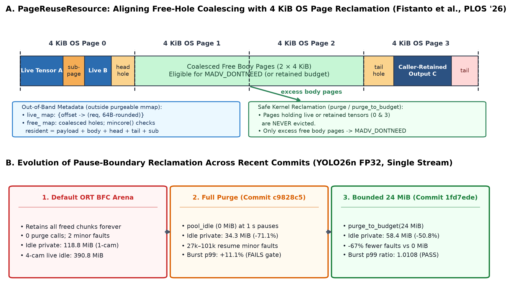
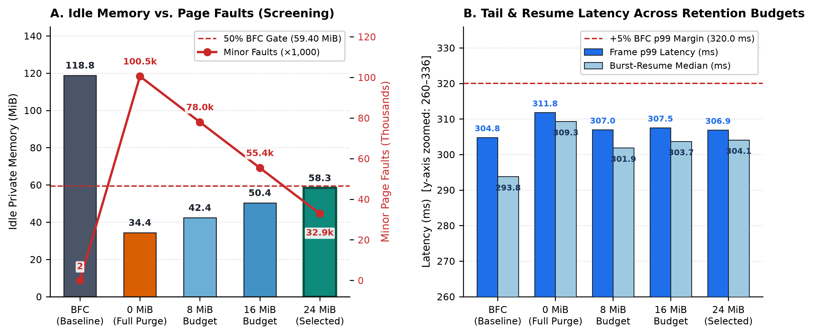
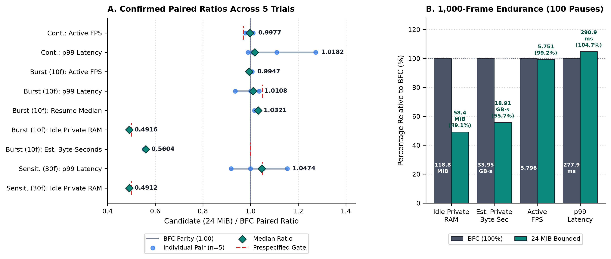

1. Research Background and Motivation
Modern edge computing systems increasingly execute continuous deep-learning perception pipelines on compact, cost-constrained hardware nodes. Applications including automated optical defect inspection, warehouse robotics, and multi-stream roadside video analytics rely on dedicated single-purpose servers or embedded appliances where physical random-access memory (RAM) constitutes a substantial share of the hardware bill of materials. Amid persistently high DRAM prices and tightening memory-per-core budgets, maximizing the useful tensor payload held per megabyte of physical RAM directly governs how many concurrent camera pipelines a single edge node can host without resorting to swap space, lower-resolution inputs, or accuracy-degrading quantization.
Despite the deterministic and repetitive memory behavior of dedicated inference pipelines, contemporary edge vision software runs atop general-purpose memory management stacks built for interactive, multi-tenant user workloads. System allocators such as GNU glibc malloc, jemalloc [5], TCMalloc [6], and mimalloc [4], together with runtime-specific arenas such as ONNX Runtime's Best-Fit with Coalescing (BFC) CPU allocator, incorporate thread-local caches, geometric chunk growth, deferred coalescing, and protective guardrails to prevent lock contention and reduce kernel system-call frequency under unpredictable allocation streams. While those mechanisms benefit multi-user servers, they create silent physical memory bloat in dedicated production systems: once intermediate tensor buffers are allocated during startup or peak bursts, user-space arenas retain the underlying virtual mappings indefinitely after frames complete, keeping backing 4 KiB physical pages pinned in resident memory even when inference pipelines pause between triggered events.
Recent systems literature clarifies why conventional user-space freeing fails to lower physical RAM usage. Fistanto, Tempel, and Dietrich [1] categorize the granularity mismatch between user-space allocator blocks and Linux 4 KiB operating-system pages into four distinct regions: sub-page holes trapped inside partially occupied pages, unaligned head and tail holes adjacent to live allocations, and contiguous whole-page body holes that span one or more full pages and can be returned to the kernel via madvise(..., MADV_DONTNEED). Importantly, their analysis highlights that merely merging free chunks in user space is insufficient unless completely empty page bodies are identified and unbacked, while noting that accumulated hole reductions do not automatically translate into equivalent reductions in total process resident set size (RSS) when persistent model weights and shared libraries dominate. Complementing that view, van Kempen and Berger [2] revisit the classic debate on custom versus general-purpose allocation [3], demonstrating in Section 2.2.2 that deferred region deallocation directly inflates live memory consumption and introducing adversarial preconditioning regimes (Adv1, Adv3, and Adv10 at target occupancies of 0.33, 0.66, and 0.80) to stress fragmentation resistance.
2. Key Research Problem and Objectives
The central problem addressed in this work is an acute latency-versus-residency dilemma in bursty dedicated edge computer vision workloads. In realistic smart-camera deployments, video streams frequently alternate between active inference bursts (triggered by motion or manufacturing triggers) and idle intervals where the ONNX Runtime session, weights, and caller-retained output tensors must remain alive in memory for immediate resumption. Under this operational profile, existing allocation strategies exhibit three unsatisfactory extremes:
- Unbounded Arena Retention (Default BFC): Retaining every allocated chunk indefinitely virtually eliminates minor page faults (only 2 faults across 120–1,000 frames) and minimizes tail latency jitter, but traps roughly 119 MiB of private physical RAM per single-camera session and over 390 MiB across four live camera sessions, leaving allocator-local payload utilization as low as 20.8%.
- Per-Frame Aggressive Trimming (
direct_trim/direct_every): Bypassing the CPU arena and invokingmalloc_trim(0)after every frame drastically lowers idle private RAM (to ~34.2 MiB), but forces the kernel to zero-fill and re-fault pages continuously, producing over 1.09 million minor page faults per 120 frames and cutting throughput from 6.33–6.46 FPS down to 5.63–5.83 FPS. - Full Pause-Boundary Purging (
pool_idle, 0 MiB budget): Retaining buffers within active bursts and discarding all free page bodies upon entering an idle pause narrows throughput loss to roughly 1.5%, yet leaves zero warm working-set pages for the first frame after sleep, triggering burst-resume fault spikes that degrade p99 tail latency by 11.1%.
To resolve this trade-off rigorously without sacrificing prediction fidelity, our research defines four strict acceptance criteria documented prior to experimentation in the repository protocol: (1) exact numerical correctness, requiring zero absolute error (max_abs_error == 0) across all complete FP32 output tensors as well as caller-retained outputs kept alive across subsequent frames; (2) live-session physical RAM measurement via Linux mincore() and /proc/self/smaps_rollup rather than virtual reservations or teardown-only snapshots; (3) at least 50% idle private RAM reduction relative to default BFC alongside lower time-integrated private byte-seconds; and (4) bounded performance impact, preserving at least 97% of continuous BFC throughput (≤3% loss) and keeping median burst p99 latency within an assumed 5% research materiality threshold (ratio ≤1.05).
3. Research Methodology and System Architecture
3.1 Experimental Workload and Bare-Metal Environment
All recent experiments evaluate a fixed-shape 640×640 FP32 YOLO26n object-detection model [7] executed on ONNX Runtime's CPU Execution Provider with full graph optimizations enabled, memory pattern planning preserved, and single-thread intra/inter-op settings per session. Experiments run on a bare-metal CloudLab testbed (Intel Xeon D-1548 @ 2.00 GHz, Broadwell-DE, 8 cores / 16 hardware threads, 12 MiB L3 cache, 64 GiB DRAM) running Ubuntu Linux (kernel 6.8.0-147-generic, g++ 13.3.0) with 4 KiB base pages, Transparent Huge Pages disabled ([never]), and CPU frequency scaling locked to the performance governor. Single-stream runs are pinned to CPU core 2 via sched_setaffinity, whereas four-camera runs pin workers across cores 0–3. Every accepted benchmark binary verifies complete FP32 outputs against saved BFC reference tensors for eight distinct deterministic inputs.
3.2 PageReuseResource and Bounded Pause Retention
To inspect and control the boundary between user-space reuse and kernel page residency, we implemented PageReuseResource (page_reuse_resource.hpp) and registered it as a custom OrtAllocator. Each pool reserves 256 MiB of anonymous virtual address space via mmap (reported separately and never conflated with physical consumption) and serves requests aligned to 64 bytes, matching ONNX Runtime's tensor alignment requirement rather than over-aligning every small allocation to 4 KiB. Crucially, all allocator tracking structures—a live_ map recording requested and rounded sizes and a free_ map storing contiguous hole offsets—are stored outside the purgeable mapping so metadata pages are never evicted.
Upon tensor deallocation, PageReuseResource inserts the freed interval and performs eager two-sided coalescing with neighboring free ranges before servicing subsequent allocations via best-fit search. At reclamation boundaries, the pool intersects free intervals with 4 KiB page boundaries (Figure 1A). Partial pages containing live tensors or caller-retained outputs (sub-page, head, and tail regions) are never passed to madvise. To verify physical accounting conservation, the built-in sample() routine invokes mincore() across the entire mapping and asserts the exact invariant resident == resident_payload + resident_body + resident_head + resident_tail + resident_sub.

PageReuseResource, illustrating Fistanto et al.'s [1] hole taxonomy and out-of-band metadata isolation. (B) Progression across commits c9828c5 and 1fd7ede from unbounded BFC retention to full pause purging (0 MiB) and bounded retention (24 MiB).
Across the last two repository commits, this architecture evolved through two disciplined methodological iterations (Figure 1B):
- Repeatability Audit & Activity-Aware Pause Purging (Commit
c9828c5, Nov 9, 2026): First, a 46-run randomized rerun (recheck_validation.py) verified earlier baseline utilization results. Second, a dedicated harness (activity_bench.cpp) modeled bursty camera operation (10 warmup frames followed by 120 measured frames interrupted by scheduled 1-second pauses) and separated active inference/deallocation timing from reference verification,/procsnapshots, and pause reclamation overhead. At each scheduled pause,pool_idlepurged all free page bodies (0 MiB budget). - Bounded Free-Page Retention & Pre-Registered Protocol (Commit
1fd7ede, Nov 19, 2026): To eliminate cold-start minor page faults when inference bursts resume, we addedpurge_to_budget(size_t budget). At pause entry, the allocator callsmincore()across the pool, leaves up tobudgetbytes of already-resident completely free 4 KiB pages intact to warm the next active burst, and invokesMADV_DONTNEEDonly on excess resident free pages. Under a frozen experimental protocol (PROTOCOL.md), candidate budgets of 0, 8, 16, and 24 MiB were screened once against BFC; the best candidate meeting the ≤50% idle RAM cutoff (24 MiB) was frozen prior to running five balanced fresh-process pairs in both continuous and 10-frame burst regimes, a 1,000-frame endurance run (100 pauses), and a five-block shuffled 30-frame burst sensitivity check.
4. Experimental Evaluation and Recent Progress
4.1 Baseline Physical Utilization and Multi-Camera Repeatability
To ground the recent commits against conventional allocators, Table 1 summarizes the live-session physical memory measurements across single-stream (60 measured frames after 10 warmup frames) and four-camera concurrent runs (30 measured + 5 warmup frames per worker) from the initial utilization campaign and its 46-run randomized confirmatory rerun in commit c9828c5. Disabling ONNX Runtime's CPU arena and trimming glibc pages (direct_trim) reduced single-stream median active peak RSS from 122.86 MiB (default BFC) to 73.39 MiB (−40.27%) and lowered live-session idle private memory from 119.06 MiB to 34.20 MiB. Importantly, the custom pool_eager_trim policy matched this footprint closely (73.74 MiB active peak, +0.48% relative to direct_trim; 34.43 MiB idle private RAM) without claiming single-stream peak superiority over tuned glibc trimming, while offering lower startup peak RSS (73.50 vs. 78.99 MiB) and a modest edge in four-camera live idle private memory (88.05 vs. 90.50 MiB, compared with 390.80 MiB for trimmed BFC).
Inside the custom pool mapping itself, eager coalescing and whole-page purging raised allocator-local idle payload utilization from 20.7955% (pool_retain_trim, which trapped 35.61 MiB in 37.34 MiB of resident free-body waste) to 99.9903% (0 B free bodies, 952 B total resident waste across 9.35 MiB of outstanding ORT requests). As recorded in the validation reports, this 99.99% metric strictly characterizes allocator-owned virtual mappings rather than whole-process RAM. Additionally, single-run synthetic preconditioning tests adapted from ISMM '26 (Adv1/3/10 at 0.33/0.66/0.80 occupancy) showed four-camera idle private RAM remaining at 88.76–106.89 MiB under pool_eager_trim versus 390.68–409.09 MiB under bfc_trim.
| Regime & Policy | Startup Peak RSS | Active Peak RSS | Live Idle Private | Recheck Active Peak | Recheck Idle Private |
|---|---|---|---|---|---|
Single: bfc (default) |
122.86 [122.66, 123.16] | 122.86 [122.66, 123.16] | 119.06 [118.97, 119.36] | 122.77 [122.67, 123.16] | 118.96 |
Single: bfc_trim |
113.83 [113.44, 114.05] | 113.83 [113.44, 114.05] | 110.03 [109.64, 110.35] | 113.45 [113.42, 113.84] | 109.65 |
Single: direct_jemalloc |
96.14 [95.15, 99.59] | 95.20 [88.60, 99.41] | 35.84 [35.79, 35.86] | — | — |
Single: direct_mimalloc |
91.07 [86.52, 107.09] | 78.14 [77.93, 78.50] | 38.87 [38.86, 39.24] | — | — |
Single: direct_trim |
78.99 [78.86, 79.04] | 73.39 [73.13, 73.40] | 34.20 [34.18, 34.21] | 73.27 [73.12, 73.39] | 34.20 |
Single: pool_eager_trim |
73.50 [73.38, 73.69] | 73.74 [73.49, 73.80] | 34.43 [34.41, 34.43] | 73.62 [73.61, 73.74] | 34.42 |
4-Cam: bfc_trim |
— | 394.66 [393.50, 395.18] | 390.80 [389.65, 391.31] | 394.04 [393.67, 394.89] | 390.16 |
4-Cam: direct_trim |
— | 236.51 [236.45, 236.62] | 90.50 [90.39, 90.54] | 236.27 [228.76, 236.59] | 90.42 |
4-Cam: pool_eager_trim |
— | 234.09 [233.81, 234.15] | 88.05 [88.02, 88.07] | 233.85 [222.69, 234.04] | 87.95 |
UTILIZATION_REPORT.md (commit 20dc7b8) and RECHECK_REPORT.md (commit c9828c5). All outputs matched BFC FP32 references bit-exactly (max_abs_error = 0).4.2 Intermediate Outcome: Full Pause-Boundary Purging (Commit c9828c5)
In commit c9828c5, five fresh-process burst repetitions (120 frames, 30-frame bursts, four 1-second pauses) directly compared bfc against pool_idle (full pause purge). Whereas pool_idle reduced median idle private RAM by 71.1% (from 118.703 to 34.344 MiB) and cut estimated private byte-seconds by 43.6% (from 2.830×109 to 1.597×109 B·s) with only a 1.5% active throughput reduction (6.308 vs. 6.405 FPS), purging every free page caused ~27,368 minor faults across four pauses and pushed median p99 latency from 268.918 ms to 298.870 ms (+11.1%). Because this violated the ≤5% p99 latency gate, full purging was explicitly recorded as failing latency acceptance, motivating bounded retention.
4.3 Bounded Page Retention Screening, Confirmation, and Endurance (Commit 1fd7ede)
Commit 1fd7ede introduced purge_to_budget() and executed the pre-registered screening sweep over 0, 8, 16, and 24 MiB free-page retention budgets under 10-frame bursts and 1-second pauses (Figure 2). Raising the retention budget linearly decreased minor page faults by 67.3%—from 100,517 faults at 0 MiB down to 77,965 at 8 MiB, 55,427 at 16 MiB, and 32,918 at 24 MiB—while lowering pause reclamation overhead from 27.87 ms to 11.75 ms total across 12 pauses and reducing p99 latency from 311.81 ms to 306.88 ms. Because 24 MiB achieved the lowest p99 latency among candidates keeping idle private memory under 50% of BFC (58.34 MiB vs. 118.79 MiB, ratio 0.4911), 24 MiB was frozen for paired confirmation.

pool_idle budgets of 0, 8, 16, and 24 MiB (120 frames, 10-frame bursts, twelve 1 s pauses). Raising the budget to 24 MiB cuts minor page faults by 67% relative to full purging while keeping idle private RAM below the 50% BFC cutoff (59.40 MiB).
Table 2 and Figure 3 present the confirmed paired ratios across five fresh processes per regime alongside the 1,000-frame endurance evaluation (100 scheduled 1-second pauses). In the confirmed 10-frame burst suite, the 24 MiB bounded pool cut idle private RAM to a median ratio of 0.4916 (−50.8%) and estimated private byte-seconds to 0.5604 (−44.0%), while holding active FPS at 0.9947, resume median latency at 1.0321, and burst p99 latency at 1.0108 (well inside the 1.05 gate). Under continuous operation without pauses, FPS held at a 0.9977 ratio; every prespecified median acceptance gate passed. Over 1,000 endurance frames, 24 MiB retention maintained 58.37 MiB idle private RAM versus 118.79 MiB for BFC (−50.9%), reduced cumulative private byte-seconds from 33.95 to 18.91 GB·s (−44.3%), and sustained 5.751 versus 5.796 active FPS (−0.8%) with 290.87 versus 277.87 ms p99 (+4.7%) and only 95.47 ms total pause reclamation overhead across 100 pauses (<1 ms per pause).
1fd7ede).| Experiment / Regime | Metric | Median Ratio (or 24 MiB) | Min (or BFC) | Max (or Δ) | Gate Status |
|---|---|---|---|---|---|
| Continuous (no pause) | Active FPS ratio | 0.9977 | 0.9794 | 1.0107 | PASS (≥ 0.97) |
| Continuous (no pause) | p99 latency ratio | 1.0182 | 0.9895 | 1.2737 | Diagnostic (high max dispersion) |
| Burst (10f, 1 s pause) | Active FPS ratio | 0.9947 | 0.9892 | 1.0068 | Diagnostic |
| Burst (10f, 1 s pause) | p99 latency ratio | 1.0108 | 0.9359 | 1.0362 | PASS (≤ 1.05) |
| Burst (10f, 1 s pause) | Idle private RAM ratio | 0.4916 | 0.4896 | 0.4918 | PASS (≤ 0.50) |
| Burst (10f, 1 s pause) | Est. private byte-seconds ratio | 0.5604 | 0.5537 | 0.5626 | PASS (< 1.00) |
| Burst (10f, 1 s pause) | Resume median latency ratio | 1.0321 | 1.0167 | 1.0334 | Diagnostic (+3.2%) |
| Sensitivity (30f burst) | 0 MiB: p99 / Idle private ratio | 1.0500 / 0.2891 | 0.9945 / 0.2884 | 1.1473 / 0.2897 | Borderline p99 median |
| Sensitivity (30f burst) | 24 MiB: p99 / Idle private ratio | 1.0474 / 0.4912 | 0.9184 / 0.4899 | 1.1541 / 0.4918 | Median PASS (dispersion noted) |
| Endurance (1,000f, 100 pauses) | Idle Private (MiB) / p99 (ms) / FPS | 58.37 / 290.87 / 5.751 | 118.79 / 277.87 / 5.796 | −50.9% / +4.7% / −0.8% | 0 error; 296,226 vs 2 faults |
first_steps/bench/utilization/results/bounded/REPORT.md and raw JSON logs. Endurance reclamation took 95.47 ms total across 100 pauses (24 MiB) vs. 0.03 ms (BFC).
5. Research Significance, Limitations, and Future Work
From a practical engineering standpoint, these findings show that dedicated edge vision systems do not need to sacrifice numerical accuracy or continuous throughput to overcome expensive DRAM limits. Simply replacing default unbounded inference arenas with tuned conventional trimming recovers ~40% of single-stream active peak RSS, while pairing a coalescing page-aware pool with bounded pause retention halves idle physical RAM residency across quiescent intervals without triggering the severe tail-latency regressions seen under naive zero-retention purging. In multi-camera edge deployments—where our four-session baseline demonstrated an idle private memory reduction from 390.80 MiB down to 88.05 MiB—reclaiming excess free page bodies allows denser workload co-location and extends the operational headroom of existing 4 GiB or 8 GiB edge nodes.
Equally important is the methodological contribution established in the repository. By measuring physical page residency directly via mincore(), checking complete and caller-retained FP32 tensors on every frame, isolating telemetry costs from active inference timings, and preserving negative intermediate results (such as the 11.1% p99 regression under full pause purging in commit c9828c5), this workflow prevents the false positives common when allocator studies rely solely on teardown metrics or virtual address space accounting.
At the same time, several scope limitations bound the current claims and define concrete directions for subsequent research:
- Explicit Pause Signals vs. Automatic Idle Detection: The current bounded-retention prototype relies on explicit scheduled pause callbacks inside the harness rather than an autonomous runtime activity detector or OS memory-pressure feedback loop.
- Single-Stream, Single-Model Scope: Bounded retention (
24 MiB) is validated here on a single fixed-shape640×640FP32 YOLO26n pipeline pinned to one Broadwell-DE Xeon D-1548 node with 4 KiB pages. Staggered multi-camera burst scheduling, dynamic input resolutions, real OS memory pressure, and newer ARM or x86 microarchitectures remain to be evaluated. - Measurement Assumptions and Trial Dispersion: The
estimated_private_byte_secondsmetric integrates private residency sampled at frame boundaries and can undercount sub-frame transient peaks, while the 5% p99 threshold represents an assumed research margin. Individual trials still exhibited tail variance (reaching 1.2737 continuously and 1.1541 in 30-frame bursts), warranting deeper investigation into OS fault-path jitter and selective pre-faulting upon burst resumption.